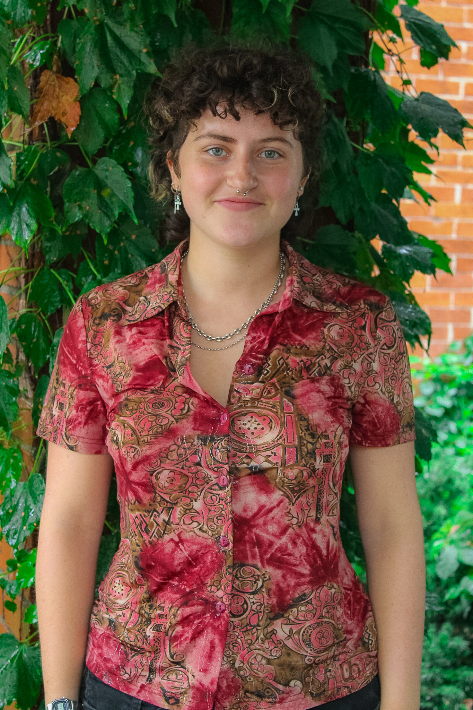

Welcome to my personal website!
I'm thrilled to share my passion for computer engineering, graphic design, and user interface and experience design with you. As I approach the completion of my fourth year in the field, I am fueled by an insatiable curiosity and an unwavering dedication to creativity.
With a deep appreciation for the intersection of art and technology, I find inspiration in the harmonious blend of aesthetics and functionality. Whether it's crafting captivating visuals or designing seamless user experiences, I strive to create innovative solutions that not only meet the needs of users but also delight them.
Beyond the world of technology, I am an ardent lover of music, art, and science. These diverse interests have helped shape my multidimensional approach to problem-solving, infusing my work with a unique and well-rounded perspective.
Enthusiasm runs through my veins, and I believe in embracing every challenge as an opportunity for growth and exploration. I am driven to push boundaries, think outside the box, and bring fresh ideas to life. Collaboration excites me, as it allows me to tap into the collective genius of like-minded individuals and create something truly extraordinary.
So, join me on this journey of innovation and creativity. Together, we can transcend the ordinary and build extraordinary experiences that make a lasting impact.


About Me
